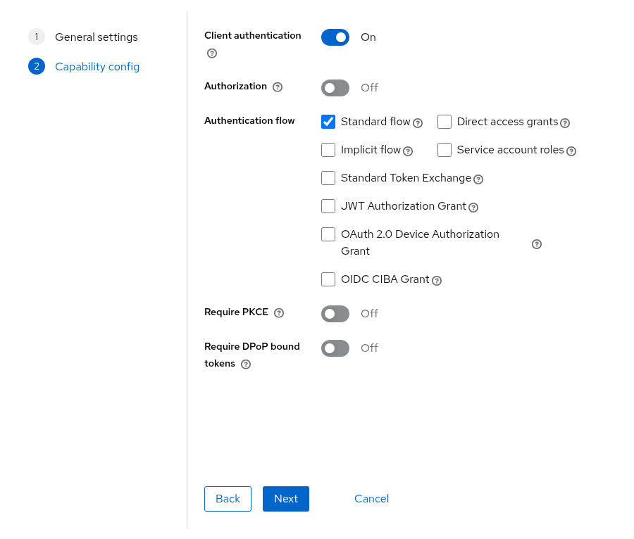
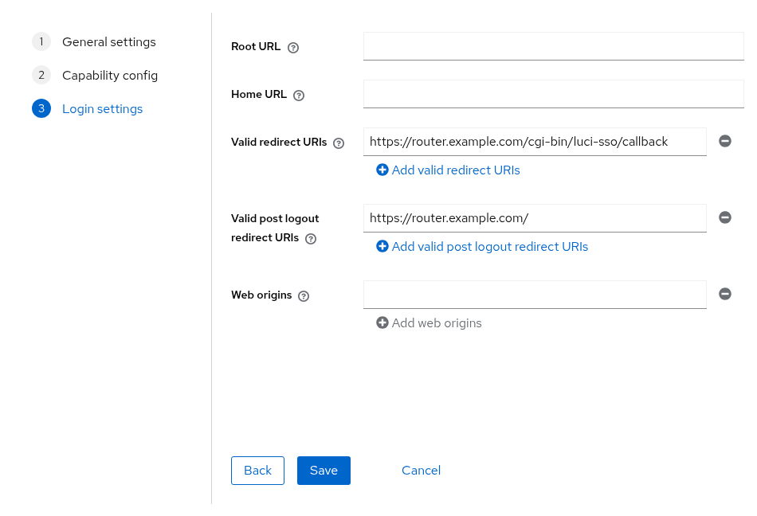
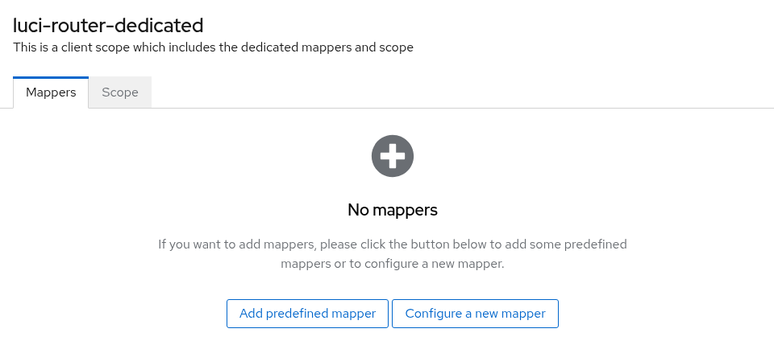
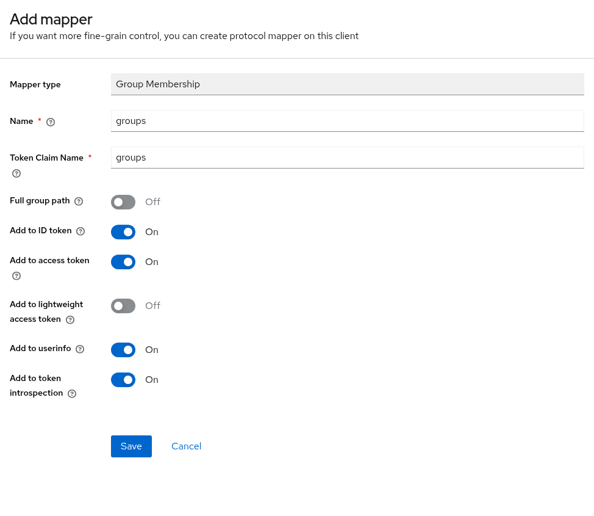

How to Configure Keycloak¶
This guide describes how to connect luci-sso to a Keycloak instance.
The steps and screenshots were checked against Keycloak 26.7.4. Labels can differ in other releases.
1. Create an OIDC client in Keycloak¶
Log in to your Keycloak admin console, click Manage realms, and click the realm you want to use (or Create realm).
Navigate to Clients and click Create client.
| Field | Value |
|---|---|
| Client type | OpenID Connect |
| Client ID | luci-router (or any label you prefer) |
Click Next. On the Capability config step:
| Field | Value |
|---|---|
| Client authentication | On (this makes the client confidential) |
| Authorization | Off |
| Authentication flow | Leave Standard flow checked |
| Require PKCE | Optional. luci-sso always sends an S256 challenge, so turning it on is safe. |
If Client authentication is off, Keycloak treats the client as public and ignores the secret. Keep it on.

Click Next. On the Login settings step:
| Field | Value |
|---|---|
| Valid redirect URIs | https://<YOUR_ROUTER_IP_OR_DOMAIN>/cgi-bin/luci-sso/callback |
| Valid post logout redirect URIs | https://<YOUR_ROUTER_IP_OR_DOMAIN>/ (where LuCI's Log out returns after ending the Keycloak session) |

Keycloak does not fall back to the redirect URIs for logout: without a Valid post logout redirect URIs entry, LuCI's Log out stops at a Keycloak error page and the Keycloak session stays open.
Click Save.
Go to the Credentials tab of the newly created client and copy the Client Secret.
2. Find your issuer URL¶
The issuer URL includes the realm name. In the Keycloak admin console, navigate to Realm settings and click OpenID Endpoint Configuration next to Endpoints. The issuer field of that document is the issuer URL. It has the form:
https://<YOUR_KEYCLOAK_HOST>/realms/<YOUR_REALM_NAME>
Keycloak's issuer has no trailing slash. Copy it exactly: issuer_url must match it character for character. Keycloak 17 and later has no /auth prefix. Realm names are case-sensitive.
Verify the router can fetch the discovery document before proceeding. On the router:
uclient-fetch -q -O - 'https://<YOUR_KEYCLOAK_HOST>/realms/<YOUR_REALM_NAME>/.well-known/openid-configuration'
A certificate error here means the router does not trust Keycloak's certificate; see How to Install a Private CA Certificate.
3. Configure the router¶
Navigate to Services > Single Sign-On.
Fill in the Settings section:
| Field | Value |
|---|---|
| Enable SSO | On |
| Issuer URL | https://<YOUR_KEYCLOAK_HOST>/realms/<YOUR_REALM_NAME> |
| Client ID | luci-router |
| Client Secret | Your Client Secret from Step 1 |
| Redirect URI | https://<YOUR_ROUTER_IP_OR_DOMAIN>/cgi-bin/luci-sso/callback |
| Scopes | openid profile email |
Click Save & Apply.
uci set luci-sso.default.issuer_url='https://<YOUR_KEYCLOAK_HOST>/realms/<YOUR_REALM_NAME>'
uci set luci-sso.default.client_id='luci-router'
uci set luci-sso.default.client_secret='<YOUR_CLIENT_SECRET>'
uci set luci-sso.default.redirect_uri='https://<YOUR_ROUTER_IP_OR_DOMAIN>/cgi-bin/luci-sso/callback'
uci set luci-sso.default.scope='openid profile email'
uci set luci-sso.default.enabled='1'
uci commit luci-sso
4. Configure role mapping¶
A role says which users it matches, by email or by group. What the role may do on the router is its rpcd login entry. On a fresh install, the shipped admin role grants full access. To give some users less, add a role with its own Read Access and Write Access, as described in How to Configure Role-Based Access Control. A user gets the first role that matches, from the top.
Map by email¶
Navigate to Services > Single Sign-On and scroll to the Users section.
Click Edit in the admin row. In Email Addresses, replace the placeholder admin@example.com with the user's email address, then click Save in the editor.
Click Save & Apply.
uci -q del_list luci-sso.admin.email='admin@example.com'
uci add_list luci-sso.admin.email='user@example.com'
uci commit luci-sso
An email matches only if Keycloak marks it as verified (email_verified: true). Keycloak sends each user's Email verified setting, which is off for a user an administrator creates. For each user you map by email, do one of the following:
- Open Users, select the user, turn on Email verified on the Details tab, and click Save.
- To have users confirm their address, turn on Verify email in Realm settings > Login. Keycloak then emails a link at the next sign-in, which needs an SMTP server in Realm settings > Email.
- For users from LDAP or another identity provider, turn on Trust Email in that provider's settings.
Otherwise the login fails with [403] USER_NOT_AUTHORIZED unless a group matches. If you cannot mark the addresses verified, map by group instead, or turn the check off:
Navigate to Services > Single Sign-On, clear Require Verified Email, and click Save & Apply.
uci set luci-sso.default.require_email_verified='0'
uci commit luci-sso
With the check off, an email rule matches any address the IdP sends, verified or not. Do this only if users cannot set their own address at Keycloak; see About Roles and Permissions.
Map by group¶
Keycloak sends group membership only when the client has a mapper for it. In the Keycloak admin console:
- Open the client you created in Step 1.
- Go to the Client scopes tab and click the dedicated scope,
luci-router-dedicated. -
Click Configure a new mapper (or, if the scope already has mappers, Add mapper > By configuration), then choose Group Membership.

-
Set Name to
groups, set Token Claim Name togroups, and turn off Full group path, so the claim containsrouter-admins, not/router-admins. Leave Add to ID token on.
-
Click Save.
A mapper on the dedicated scope is added to every token issued to this client, so the router's Scopes stay openid profile email. Do not add groups to them: Keycloak has no client scope named groups, and it rejects the login with invalid_scope.
Then map the group on the router:
Navigate to Services > Single Sign-On and scroll to Users. Click Edit in the admin row. In Groups, enter the group name, such as router-admins, then click Save in the editor.
Click Save & Apply.
uci add_list luci-sso.admin.group='router-admins'
uci commit luci-sso
5. Verify¶
Check that the service is active. On the router:
uclient-fetch -q -O - --no-check-certificate 'https://127.0.0.1/cgi-bin/luci-sso?action=enabled'
# Expected: {"enabled": true}
{"enabled": false} means SSO is turned off. An HTTP 500 error instead of JSON means SSO is turned on but the configuration was rejected; the log line Configuration rejected: … before [500] CONFIG_ERROR names the option.
Navigate to the LuCI login page. The Login with SSO button should appear. Clicking it redirects to your Keycloak login screen.
Troubleshooting¶
Navigate to Status > System Log and filter for luci-sso.
logread -e luci-sso | tail -30
| Symptom | Likely cause |
|---|---|
| A message under Login with SSO says "The identity provider is not responding" | The browser cannot reach the IdP; the router has no error to log. Open https://<YOUR_KEYCLOAK_HOST>/realms/<YOUR_REALM_NAME>/.well-known/openid-configuration in the same browser, on the same device. See The SSO button says the identity provider is not responding. |
[502] OIDC_DISCOVERY_FAILED, preceded by Discovery fetch HTTP 404 from [id: …] |
The realm path in issuer_url is wrong. Realm names are case-sensitive, and Keycloak 17 and later has no /auth prefix. |
[502] OIDC_DISCOVERY_FAILED, preceded by DISCOVERY_ISSUER_MISMATCH: issuer_url is "…" but the discovery document declares "…" |
Keycloak builds its issuer from its configured host name (the realm's Frontend URL, or the server's hostname option), which differs from the host in issuer_url, or issuer_url has a trailing slash that Keycloak's issuer lacks. Copy the issuer field from the realm's /.well-known/openid-configuration document exactly. |
[400] IDP_ERROR, preceded by IDP_ERROR: the IdP returned error=invalid_scope (Invalid scopes: …) |
The router's Scopes include a scope Keycloak does not have, usually groups. Remove it, or create a client scope with that name and add it to the client. |
[500] CONFIG_ERROR, preceded by Configuration rejected: <reason> |
A required option is missing or invalid; the reason names it. redirect_uri is mandatory and must use HTTPS means redirect_uri was never saved: set it with uci set luci-sso.default.redirect_uri='https://<YOUR_ROUTER_IP_OR_DOMAIN>/cgi-bin/luci-sso/callback' and uci commit luci-sso. |
Keycloak shows Invalid parameter: redirect_uri instead of its login screen |
The router's redirect_uri is not in the client's Valid redirect URIs. The router logs no OIDC callback received line. |
[502] TOKEN_EXCHANGE_FAILED, preceded by Token exchange HTTP 401 |
Keycloak rejected the client credentials. Copy the Client Secret again from the client's Credentials tab, or click Regenerate there and update the router. |
[403] USER_NOT_AUTHORIZED, preceded by Ignoring the unverified email of user [sub_id: …] for role matching |
The user's Email verified setting is off, so the email did not count. Turn it on, or see Map by email for the other ways. |
[403] USER_NOT_AUTHORIZED, preceded by User [sub_id: …] matched no roles |
Group mapping is missing or the mapper has Full group path enabled, so the claim contains /my-group instead of my-group. Either disable Full group path in the mapper or update the role config to match the full path. |
[502] OIDC_DISCOVERY_FAILED, preceded by Discovery fetch failed for [id: …]: HTTP_REQUEST_FAILED (CERT_UNTRUSTED) |
The router does not trust Keycloak's TLS certificate. See How to Install a Private CA Certificate. |
Keycloak shows Invalid redirect uri after LuCI's Log out, and the Keycloak session stays open |
https://<YOUR_ROUTER_IP_OR_DOMAIN>/ is not in the client's Valid post logout redirect URIs. Add it. |
For a full list of error codes, see the Log Messages Reference. For every check luci-sso makes of an identity provider, and the error each failure logs, see Provider Compatibility.